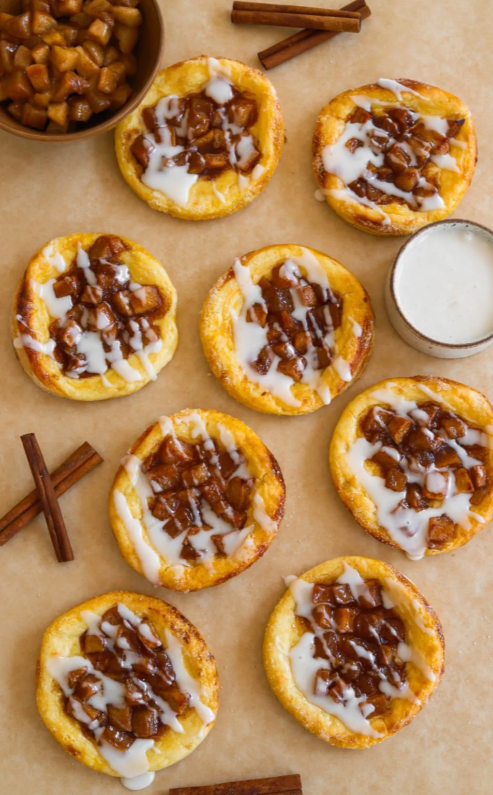

DESSERT
APPLE PIE DANISHES
PREP TIME: 40 MINUTES COOK TIME: 20 MINUTES
TOTAL TIME: 1 HOUR YIELDS: 8 TO 10 DANISHES
These apple cream cheese danishes taste like they came straight
from a bakery, but they're so easy to make at home! Flaky, buttery
puff pastry with a creamy layer of sweetened cream cheese and
tender cinnamon-spiced apples every bite is a dream. Perfect for
breakfast, dessert, or a cozy afternoon treat!
Jump To Recipe
DESSERT
APPLE PIE DANISHES
PREP TIME: 40 MINUTES COOK TIME: 20 MINUTES
TOTAL TIME: 1 HOUR YIELDS: 8 TO 10 DANISHES
These apple cream cheese danishes taste like they came straight
from a bakery, but they're so easy to make at home! Flaky, buttery
puff pastry with a creamy layer of sweetened cream cheese and
tender cinnamon-spiced apples every bite is a dream. Perfect for
breakfast, dessert, or a cozy afternoon treat!
INGREDIENTS
APPLE PIE FILLING
-
2 large Granny Smith apples, peeled and cubed
-
3 tablespoons unsalted butter
-
1/3 cup light brown sugar
-
1 1/4 teaspoon cinnamon
-
pinch of salt
-
1 teaspoon vanilla extract
-
1/2 tablespoon lemon juice
-
2 teaspoons cornstarch
-
1 tablespoon water
CHEESE FILLING:
-
8 ounces cream cheese, softened
-
1/4 cup granulated white sugar
-
1 egg yolk
-
1 teaspoon vanilla extract
EGG WASH:
-
1 large egg
-
1 tablespoon whole milk
ICING GLAZE:
-
1 cup powdered sugar
-
2 tablespoons whole milk or heavy cream
-
1/2 teaspoon vanilla extract
OTHER:
-
2 puff pastry sheets
-
granulated white sugar, for sprinkling
INSTRUCTIONS
PREPARE APPLE FILLING:
-
In a medium pan, melt the butter over medium heat.
-
Add the cubed apples, brown sugar, cinnamon, and a pinch of
salt. Cook until the apples soften, about 5-7 minutes.
-
Stir in the vanilla extract, lemon juice, cornstarch, and
water. Continue cooking until the mixture thickens,
about 2 minutes.
-
Remove from heat and let the apple mixture cool.
PREPARE CHEESE FILLING:
-
In a bowl, mix the softened cream cheese, sugar, egg yolk,
and vanilla extract until smooth and creamy. Set aside.
ASSEMBLE DANISHES:
-
Roll out the puff pastry sheets on a floured surface and
cut each sheet into circles using a large cookie cutter or
a glass.
-
Using a smaller cutter, lightly score a smaller circle
about 3/4 of the way through the dough in the center of
each larger circle. This will help keep the center from
rising too much during baking.
-
Spoon about 1 tablespoon of the cream cheese filling into
the center of each scored circle.
-
Top the cream cheese mixture with a spoonful of the cooled
apple filling.
-
Whisk the egg and milk together in a small bowl. Brush the
outer edges of the pastry with the egg wash.
-
Sprinkle a little granulated sugar over the edges.
BAKE THE DANISHES:
-
Preheat your oven to 400°F (200°C)
-
Bake the danishes for 15-20 minutes or until the puff pastry
is golden and flaky.
THE ICING:
-
In a small bowl, whisk together the powdered sugar, vanilla
extract, and milk or cream until smooth. Adjust the
consistency with more milk if necessary.
-
Once the danishes are out of the oven and fully cooled,
drizzle the icing over them and enjoy!